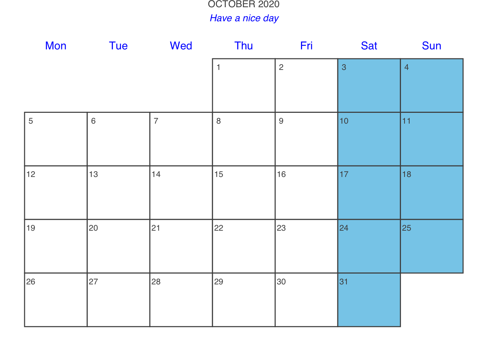

This page provides a summary and simple examples of contents introduced in the Medium as “The Most Underrated R pakcages: 2020 Edition”.
Misc
#install.packages('calendR')
library(calendR)## ~~ Package calendR
## Visit https://r-coder.com/ for R tutorials ~~calendR(year = 2020, month=10, title.size = 10,
subtitle = "Have a nice day",
subtitle.col = 'Blue',
day.size = 3,
weeknames.size = 4,
weeknames.col = 'blue',
weeknames = c('Mon','Tue','Wed','Thu','Fri','Sat','Sun'),
start = 'M',
special.days = 'weekend',
special.col = 'skyblue',
lty = 1, margin = 0
)